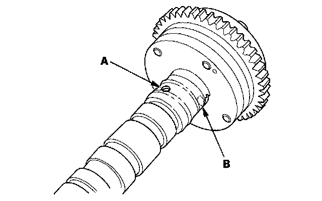
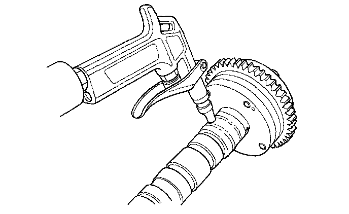
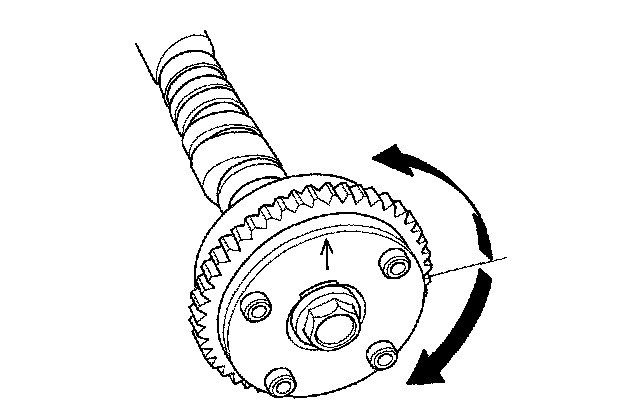

VTC Actuator
VTC Actuator Inspection1. Remove the cam chain.
2. Loosen the rocker arm adjusting screws.
3. Remove the camshaft holder.
4. Remove the intake camshaft.
5. Check that the variable valve timing control (VTC) actuator is locked by turning the VTC actuator clockwise and counterclockwise. If the VTC actuator is not locked, replace the VTC actuator.
6. Seal the advance holes (A) and retard holes (B) in the No. 1 camshaft journal with tape.

7. Punch a hole in the tape over one of the advance holes.
8. Apply air to the advance hole to release the lock.

9. Check that the VTC actuator moves smoothly. If the VTC actuator does not move smoothly, replace the VTC actuator.

10. Make sure the punch marks on the VTC actuator and exhaust camshaft sprocket are facing up, then set the camshafts in the rocker shaft holder.
11. Set the camshaft holders and chain guide B in place.
12. Tighten the camshaft holder bolts to the specified torque.
13. Install the cam chain.
14. Adjust the valve clearance.